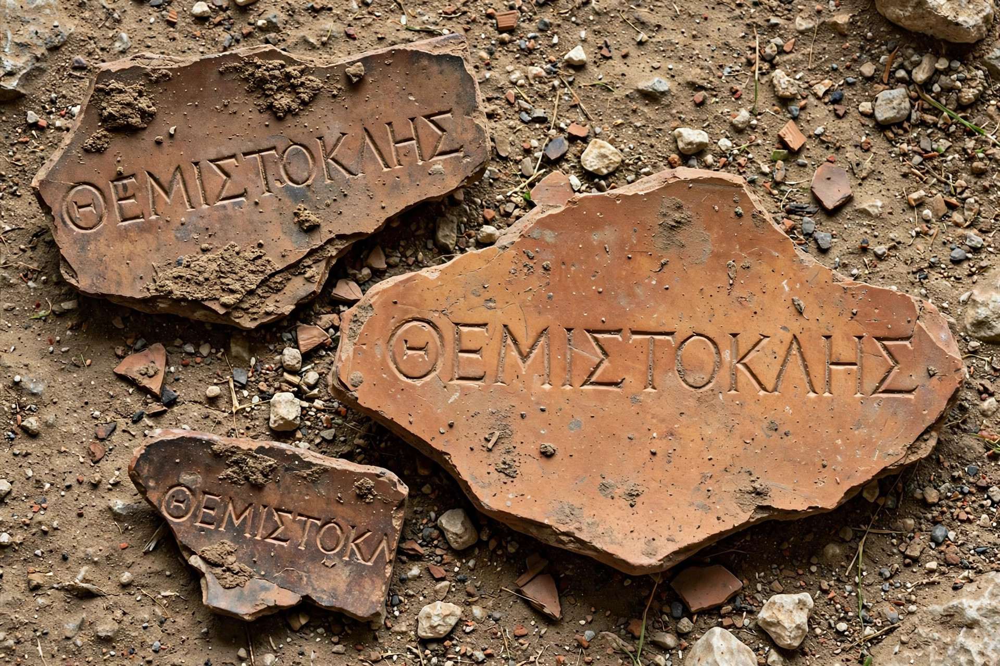

| Ostracism | |
|---|---|
| Polity | Classical Athens |
| Introduced | Traditionally attributed to Cleisthenes, 508/507 BC |
| First used | 487 BC |
| Penalty | Exile for 10 years |
| Quorum | 6,000 votes |
Ostracism (Greek: ὀστρακισμός, ostrakismos) was a procedure of ancient Athenian democracy in which any citizen could be exiled from the city-state of Athens for ten years. While some instances of ostracism clearly expressed popular anger at the citizen, ostracism was often used preemptively, as a way of defusing struggles for power between rival politicians or factions by removing one of them from the scene. It derives its name from the ostraka, pottery shards on which voters scratched the name of the person they wished to exile.
Each year the assembly first voted on whether to hold an ostracism at all. If approved, citizens gathered in the agora, each writing a name on a potsherd. Provided at least 6,000 votes were cast, the man named on the most shards had to leave Athens within ten days and remain in exile for ten years. His property was not confiscated and he retained his citizenship; on his return he resumed his former status.
The institution was traditionally attributed to Cleisthenes but was first used in 487 BC against Hipparchus, a relative of the tyrant Peisistratus. Its most famous victims were Aristides (482 BC), Themistocles (c. 472 BC), Cimon (461 BC), and Thucydides son of Melesias (443 BC). The last known ostracism, of the demagogue Hyperbolus around 416 BC, resulted from a pact between the rival camps of Nicias and Alcibiades, and the practice fell into disuse thereafter, replaced by legal procedures such as the graphē paranomōn.
Thousands of surviving ostraka, found in the Athenian agora and the Kerameikos cemetery, include pre-inscribed batches — evidence of organised campaigning. The word has passed into modern usage meaning exclusion from a group by general consent.